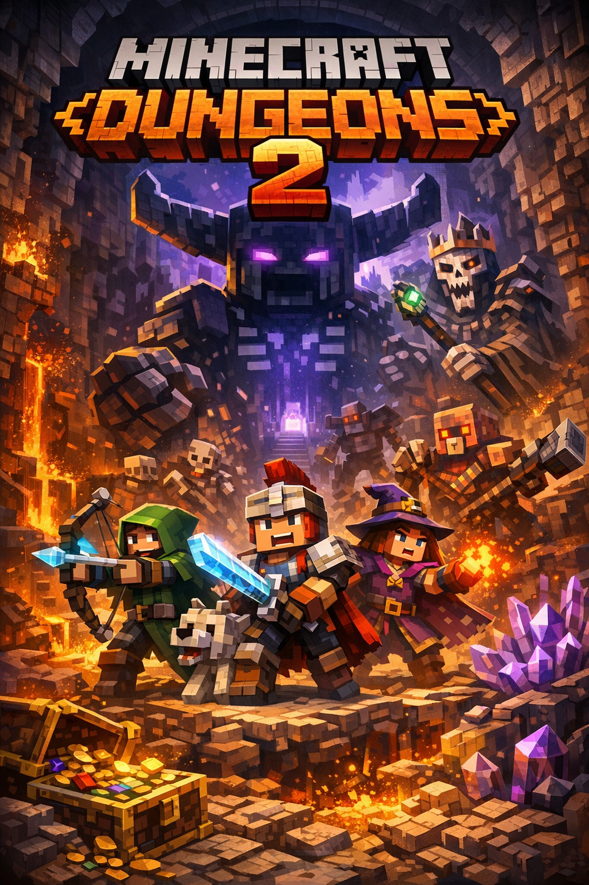
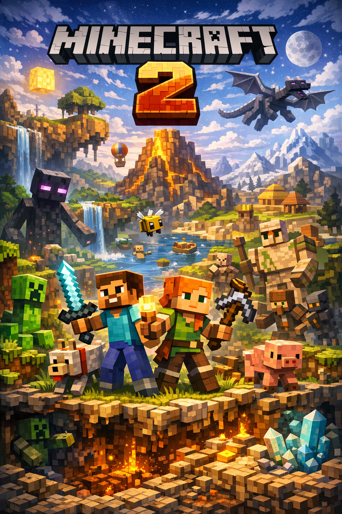

Rampage the world is a 2D sandbox adventure game first released in 2011. It's often compared to Minecraft, but it focuses more on combat, bosses, exploration, and progression.

Point is a cooperative, physics-based climbing game released in 2025 where players climb a procedurally generated mountain while managing stamina, resources, and teamwork to overcome hazards.

Film your friends doing scary things to become SpöökTube famous! (strongly advised to not go alone)

After a catastrophic crash leaves you stranded on the oceanic world Neryos‑9, your only hope lies beneath the waves. Armed with a damaged survival suit and a failing escape pod, you must explore a vast, living ocean filled with beauty, danger, and secrets older than humanity itself.

A new threat stirs, ready to descend upon the land and its inhabitants to cause unspeakable mayhem. Become a hero and take on foes unlike anything you’ve faced before, journey through long‑forgotten locations, and clash with the forces of evil once more!

The blocks are back and they mean business. Dig, build, and survive in an infinite procedurally generated world that is, scientifically speaking, more infinite than the last one. Features all the classic blocks you know and love, plus several new ones nobody asked for. Wolves can now wear hats.